Tres variaciones sobre el mismo lenguaje visual: navy profundo + oro real · Q monograma serif · corona discreta · tagline tipográfica espaciada. Misma paleta, misma tipografía, misma silueta. Cambia solo el detalle simbólico interior.
Solo la Q serif editorial coronada. Sin botánica, sin ombligo, sin distracción. Es la versión más limpia y la que mejor escalará a favicon 16×16, app icon móvil y firma de email. Si dudas, ésta. Cuando una marca tiene un nombre fuerte («Queens Bellybutton»), el logo no necesita gritar.
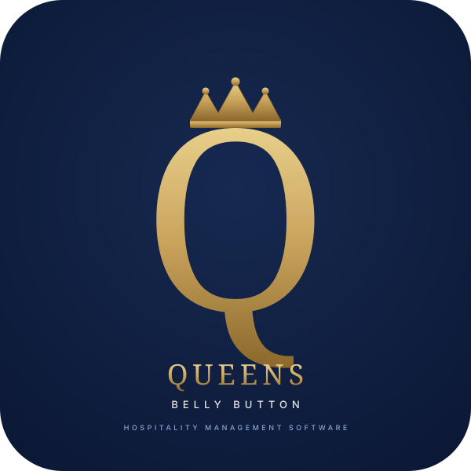
La misma Q coronada con una rama discreta de tres hojas saliendo de la cola hacia la izquierda. Las hojas evocan Umbilicus rupestris · la planta de muro de monasterio que da nombre popular a «ombligo de la reina». Más cálido y narrativo que A. Identidad con alma · funciona excepcionalmente en web y pitch deck. En tamaños muy pequeños las hojas se simplifican o desaparecen sin perder reconocibilidad.
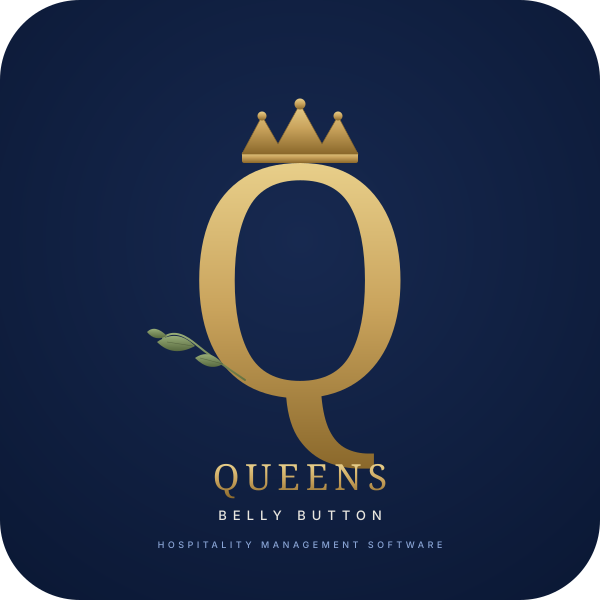
La Q coronada con un orbe luminoso pequeño dentro del óvalo: el ombligo literal del logo. Es el guiño semántico más explícito al nombre. «La Q tiene su propio ombligo» · una metáfora visual fácil de explicar y difícil de olvidar. El orbe se ve dorado-luz sobre navy, se mantiene visible incluso a tamaño favicon. Más conceptual que A y B; ideal si quieres que la marca cuente su historia desde el primer instante.
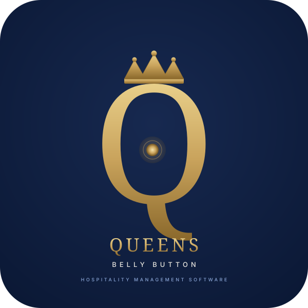
La planta real produce espigas verticales con pequeñas flores tubulares colgantes color blanco-marfil cremoso. Son su firma botánica. Las incorporo en tres composiciones distintas.
Al lado derecho de la Q, un tallo vertical fino con siete campanillas alternadas que ascienden hacia la corona. Botánicamente correcto: así florece la Umbilicus rupestris en primavera, en las grietas de los muros. Las flores son blanco-marfil con borde dorado fino · luce como joyería suspendida. Composición vertical y aristocrática.
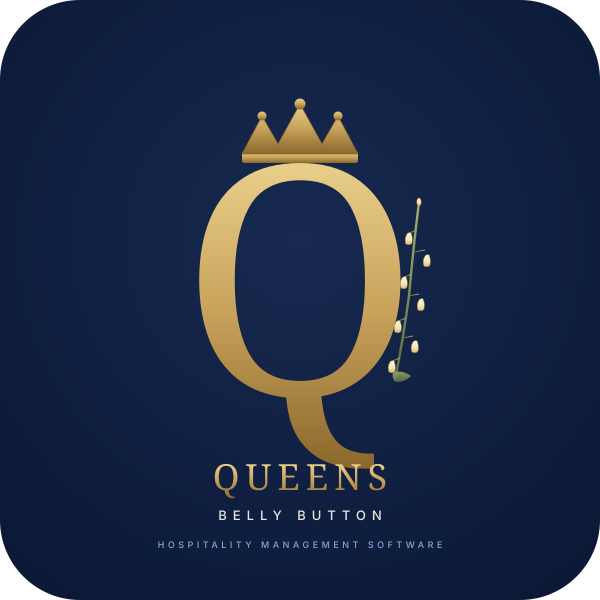
Un tallo florido que abraza la Q por la izquierda, naciendo de una hoja suculenta basal (la planta entera, no solo la flor). Las campanillas alternan blanco-marfil y blanco-rosado · un detalle muy real: algunas Umbilicus tienen tintes rosa pálido cuando reciben más sol. La composición es más envolvente que D · la planta no decora la Q, la sostiene.
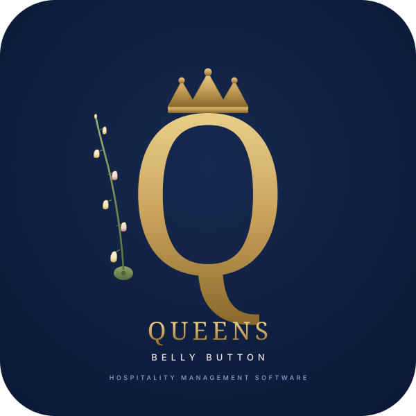
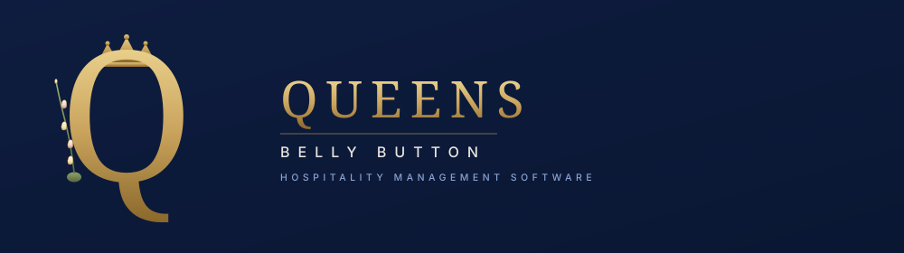
La planta entera: a la izquierda de la Q, las hojas redondas suculentas con su característico ombligo central (la roseta basal). A la derecha, la espiga florida ascendiendo. Esto es Umbilicus rupestris tal cual crece en un muro de Algeciras, junto a la Q coronada. La composición más rica y más explícita. Cuenta toda la historia botánica en un solo símbolo.
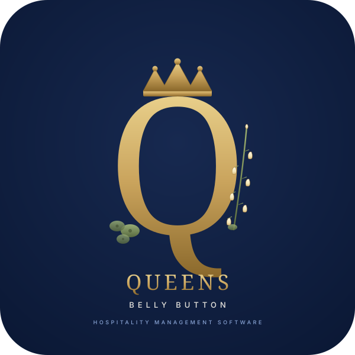
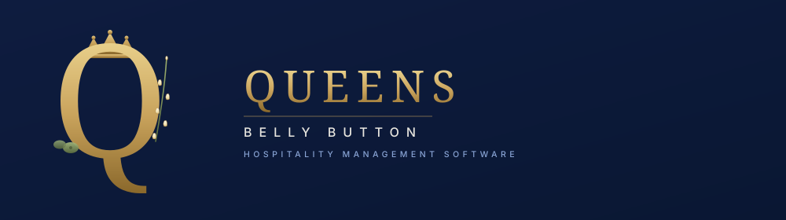
Versión vectorial limpia de la imagen que enviaste. Los pétalos son paths SVG individuales con gradientes controlados, no rendering foto-realista. Mantiene la elegancia editorial sin caer en el «look generado por IA» (sombras dramáticas, perspectiva, reflejos).
Recreación vectorial de tu imagen de referencia. A la izquierda 3 hojas redondas suculentas (con el ombligo botánico característico al centro de la hoja mayor); a la derecha una flor rosa abierta de 12 pétalos en dos capas — rosa magenta exterior + rosa más claro interior — con centro dorado. Composición simétrica, paleta de 5 colores, líneas claras. Esto es lo que pediste.
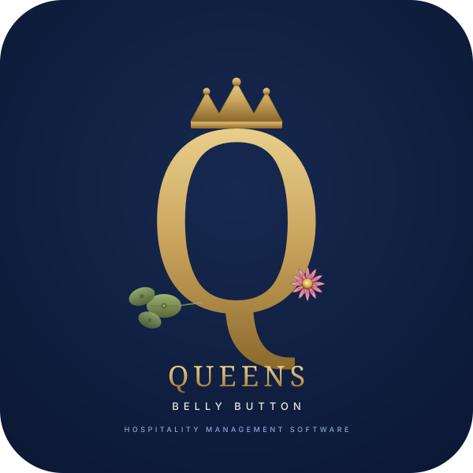
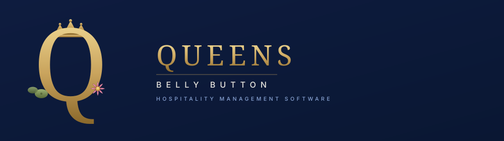
Mezcla la flor rosa que te gusta con la botánica real de la planta. Izquierda: la flor rosa principal + 2 hojas suculentas (idéntica a G). Derecha: la espiga florida ascendente con campanillas blanco-marfil — que es como realmente florece la Umbilicus rupestris. Doble símbolo: lo aspiracional (flor rosa de la imagen) + lo verdadero (espiga botánica).
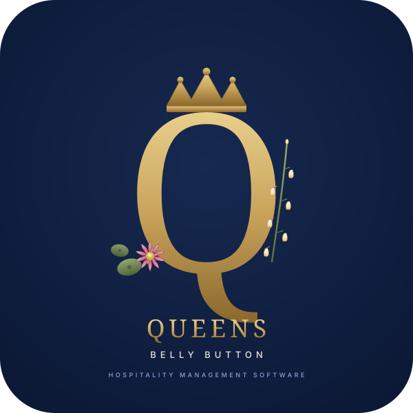
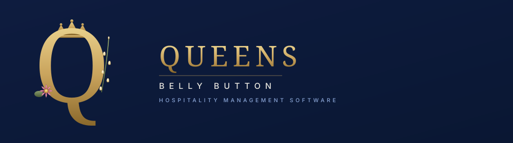
Tres flores rosas en racimo ascendente por el lado derecho de la Q, de tamaños y tonos distintos (rosa intenso en el centro, rosa pálido arriba y abajo, capullo cerrado en el extremo). Cuenta el paso del tiempo en una sola imagen: brote → flor → marchitez. Las hojas redondas hacen de base. Composición rica pero estructurada · todo dentro de un solo tallo común.
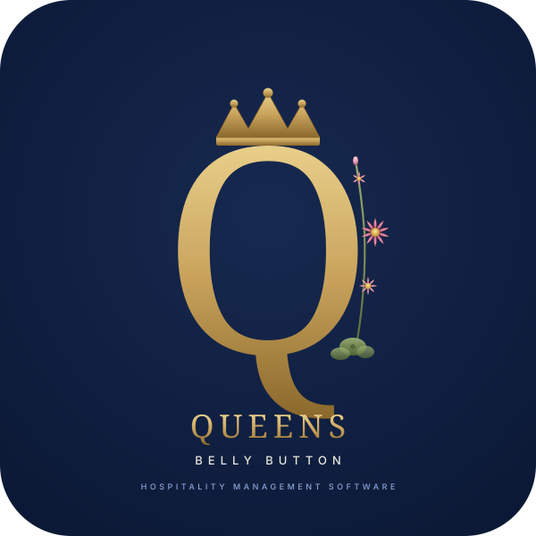
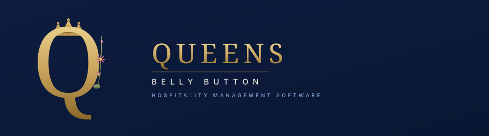